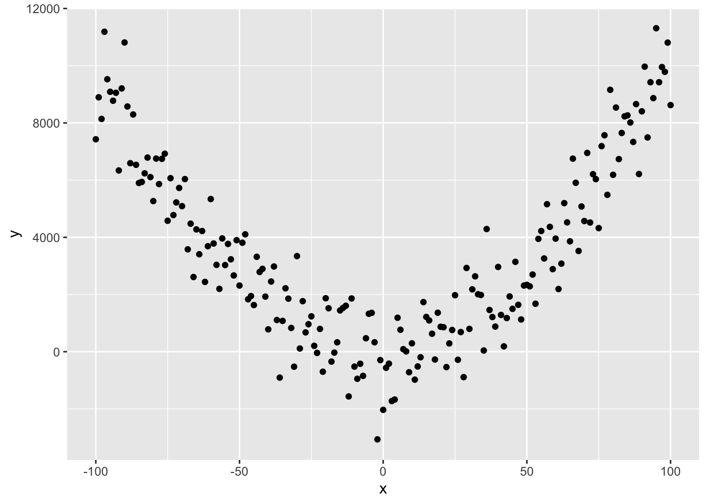

An Introduction to Experimental Design and Linear Models
2022-07-19
Chapter 1 Introduction
Welcome to An Introduction to Experimental Design and Linear Models
In this mini-module, you’ll be learning about the design and analysis of ANOVA and ANCOVA experiments.
This module is compulsory for all, because it forms the foundation for most of the more complex experiments you will do as a researcher. And it is the major step beyond the t-test, 1-way ANOVA, simple regression and chi-square contingency table analyses we covered in semester 1.
If you found Semester 1 ideas hard, please return to the sections on the 1-way ANOVA and the Regression model. Chapter 5 in Getting Started with R (available as an online Resource via STARPlus) covers the material you should know.
You will also need to feel comfortable with dplyr and ggplot - well be reinforcing the old stuff and introducing a few new tricks.
There are 12 Chapters to the book, some only a page or two and some quite a but longer. The majority contain R code that you should recreated in your own scripts as you work along. You should use your scripts to add annotation and notes about the core ideas.
The learning outcome for this mini-module are that you will understand the basic ideas about
- Replication, Randomisation and Reducing Noise
- Experimental Design and Analysis - The Completely Randomised Design
- Experimental Design and Analysis - The Randomised Block Design
- Experimental Design and Analysis - The Latin Square Design
- Experimental Design and Analysis - The ANCOVA Design
- Multiple Regression and Non-linearity.
A note on time allocation: In a ‘normal semester’, you’d be in the computer room working on these topics for ~12 hours over the course of 3 days in a week.
You should plan on allocating 9-12 hours of your week to this section. You should expect to do the same for the other mini-modules.
1.0.1 The Three Rs
Before we get started, it’s vital that you understand that there are some very basic principles needed to ensure that your experiments can provide robust and reliable inference (answers to your questions). The “3 R’s”.
- Randomisation: the random allocation of treatments to the experimental units, to avoid confounding between treatment effects and other unknown effects.
- Replication: the repetition of a treatment within an experiment, to quantify the natural variation between experimental units and increase accuracy of estimated effects.
- Reduce noise: by controlling as much as possible the conditions in the experiment, e.g. by grouping of similar experimental units in blocks.
As we develop ideas, you should come back to these definitions and see if your understanding of them has improved.
1.0.2 The General Linear Model
This module is focused on a class of model called the General Linear Model. It is not a GLM. The GLM is a generalised linear model. I know, right?
The general linear model is, as we learned last semester, a model fit in R with the lm() function. It includes regression, ANOVA, ANCOVA and variations of these. There are a few key characterstics to remember about these models
The general linear model has the following form
\(y = \beta_{0}+\beta_{1}*X_{1}+\beta_{2}*X_{2}+\epsilon\)
Where the \(y\) is the response variable, the \(\beta\)’s are estimated parameters, the \(X\)’s are the predictor variables and the \(\epsilon\) comes from a Gaussian distribution with zero mean and constant variance.
Let’s decompose that a bit more
There are two types of predictor variable
Metric predictor variables are measurements of some quantity that may help to predict the value of the response. For example, if the response is the blood pressure of patients in a clinical trial, then age, fat mass and height are potential metric predictor variables. You may know these as continuous explanatory variables
Factor variables are labels that serve to categorize the response measurements into groups, which may have different expected values. Continuing the blood pressure example, factor variables might be sex and drug treatment received (drug A, drug B or placebo, for example). You may also know these as categorical explanatory variables.
So, you hopefully can see how this general linear model is capable of representing
- ANOVA – Analysis of variance. Predictors are factors.
- Regression. Predictor is a metric variable (continuous variable).
- Multiple regression. Predictors are a metric variables (continuous variables).
- ANCOVA - Analysis of co-variance. Predictors are a mixture of metric variables (continuous variables) and factors.
Finally, it is important to understand that these data can be modelled with a linear model:

How, you ask!? Well…. consider this equation
\(y = 0.01 + x + x^{2} + \epsilon\)
Referring to our generic model structure above,
\(y = \beta_{0}+\beta_{1}*X_{1}+\beta_{2}*X_{2}+\epsilon\)
we hopefully can see that \(\beta_{0} = 0.01\), \(\beta_{1} = 0\) and \(\beta_{2} = 1\), where \(X_{2} = X^{2}\)!
Linear models are perfectly capable of being used to estimate non-linear relationships.
Here is the code to make that figure.
# set x range
x <- -100:100
# define y without error
y_det <- 0.01+x^2
# add some random variation
y <- y_det+rnorm(length(x),0,1000)
# create dataframe and plot
df <- data.frame(x, y)
ggplot(df, aes(x = x, y = y))+
geom_point()1.0.3 Section Readings —-
There are several resources that will help with this section of the stats course, and onwards
- Getting Started with R - An Introducton for Biologists, Second Edition (available as an electronic online resource via StarPlus)
- Experimental Design for the Life Sciences - Nick Colegrave and Graham Ruxton (seen on eBay for £2.50!)
- Of course, the venerable coursebook for APS 240: https://dzchilds.github.io/stats-for-bio/index.html